Show supplementary code
import numpy as np
from itertools import product
import matplotlib.pyplot as pltValerio Bonometti
January 20, 2023
When we take measurements in the real world we are often interested in quantifying a process or a phenomenon underlying such measures. If these measurements are acquired through imprecise methodologies it is important to be able to separate the true “signal” representative of the process of interest from the noise, filtering offers us a way for addressing this problem.
One obvious solution might be to take multiple measurements and derive the expected signal from them. Unfortunately this option can become problematic in situations when the noise is very large or it is hard to gather measurements. In some situations for example we might have access to only a single measure acquired over time (e.g., financial or economical time series). In these cases we want to use everything we have in order to derive our estimate, in other words we do not discard information.
Filtering helps us making effective use of past information by using it for performing prediction that are then used for weighting and updating current noisy observations. In reality, both predictions and observations are assumed to be inherently noisy hence a natural framework for developing filtering is that of Bayesian statistics (this relationship will be tackled in a later post).
Before jumping into more advanced topics however it is good to start from the core mechanisms of prediction and update and the g-h filter is the perfect tool for illustrating them.
import numpy as np
import matplotlib.pyplot as plt
def sensors_plots(measurements_dict, show_expectation=True, current_ax=None, **scatter_kwargs):
if current_ax is None:
fig, ax = plt.subplots(1, 1, figsize=(6, 3))
else:
ax = current_ax
expectation = 0
for sensor_number, (sensor, measurements) in enumerate(measurements_dict.items()):
mean_measurements = np.mean(measurements)
std_measurements = np.std(measurements)
expectation += mean_measurements
ax.scatter(
x=mean_measurements,
y=sensor_number,
label=sensor,
**scatter_kwargs
)
ax.errorbar(
x=mean_measurements,
y=sensor_number,
xerr=1.96 *std_measurements,
ls="none"
)
expectation = round(expectation / len(measurements_dict), 2)
if show_expectation:
ax.axvline(
expectation,
linestyle="--",
c="r",
label=f"Expected Value {expectation}"
)
ax.legend()
ax.set_ylim(
- 2,
len(measurements_dict) + 1
)
ax.set_yticks([])
ax.set_xlabel("Measurement")
ax.legend()
ax.tick_params(direction="in", top=True, axis="x", rotation=45)
ax.grid(
visible=True,
which="major",
axis="x",
color="k",
alpha=0.25,
linestyle="--"
)
if current_ax is None:
return fig, ax
else:
return ax
def time_series_plots(measurements, expected_noise, current_ax=None, dense_grid=True, scatter_kwargs={}, error_kwargs={}):
if current_ax is None:
fig, ax = plt.subplots(1, 1, figsize=(6, 3))
else:
ax = current_ax
time = np.arange(len(measurements))
ax.scatter(
x=time,
y=measurements,
label="Measurements + Noise",
**scatter_kwargs
)
ax.errorbar(
x=time,
y=measurements,
yerr=[1.96 *expected_noise for t in time],
ls="none",
**error_kwargs
)
if dense_grid:
ax.set_xticks(np.arange(len(time), step=0.5))
ax.set_ylabel("Measurement")
ax.set_xlabel("Time")
ax.legend()
ax.tick_params(direction="in", top=True, axis="x", rotation=45)
ax.grid(
visible=True,
which="major",
axis="x",
color="k",
alpha=0.25,
linestyle="--"
)
if current_ax is None:
return fig, ax
else:
return axLet’s imagine to be in a situation in which we want to evaluate a certain phenomena using two sensors (or any measuring tool). We know that both sensors provide measures with an error margin of \(\pm 5\) units (expressed as standard deviations), so how can we obtain a reliable estimate of the state of the underlying phenomena?
In the absence of any other information, the most straightforward strategy here is to leverage the measurements provided by both sensors and compute the expected value.
measurements_dict = {
"Sensor 1": np.random.normal(30, 5, 50),
"Sensor 2": np.random.normal(20, 5, 50)
}
fig, ax = sensors_plots(
measurements_dict=measurements_dict,
show_expectation=True
)
plt.show()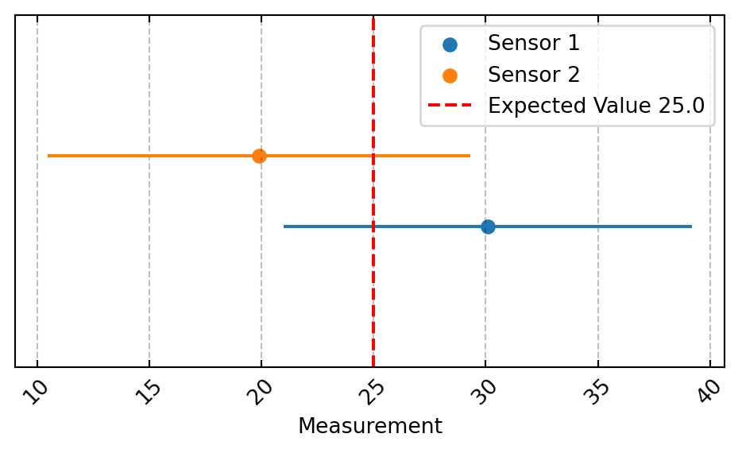
The computed expected value gives us a more reasonable and robust estimate of the true state of the phenomena we are trying to measure. This because it is a value compatible with the measurements provided by both sensors.
This assumes both sensors to be equally trustworthy or in other words to have the same margin of error. In case we knew that one of the two sensors is sensibly more accurate than the other (let’s say a margin of error of \(\pm 2.5\) units) we would probably expect it to contribute more to our estimate. However, surprisingly including some of the information provided by the less accurate sensor can give us an even better estimate!
measurements_dict = {
"Accurate Sensor": np.random.normal(30, 2.5, 50),
"Noisy Sensor": np.random.normal(20, 5, 50)
}
fig, ax = sensors_plots(
measurements_dict=measurements_dict,
show_expectation=True
)
plt.show()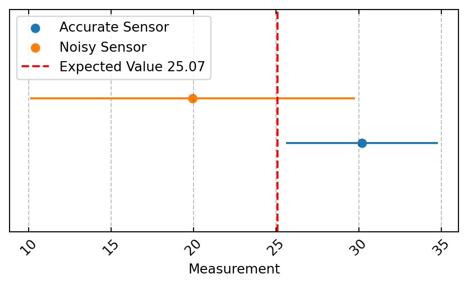
If we look at the overlap between the measurements provided by both sensors we can see that the region of acceptable values compatible with the two different measurements regimes is narrower than the one provided by the more accurate sensor alone!
Interestingly, this region doesn’t include the expected value from the accurate sensor and compute a naive average between the two provide an estimate that is incompatible with the observed measurements.
Take Home Message
Two measurements sources, even if one is less accurate, are better than one. Information is always used and never thrown away.
A more common situation however is observed sequential measurements from a single, potentially noisy sensor. Of course the more measurements we take the closer we should get to the actual state of the phenomena we are analyzing.
Unfortunately in many situations we don’t have this luxury. As we mentioned at the beginning of this post, in some situation we can only observe a handful of measurements (potentially only one!) like in the case of temporal series.
In a temporal series if our measurements happen to be at a frequency higher than the dynamics of the phenomena under investigation we are in a relatively comfortable position but otherwise we are going to be in a situation where information is sparse and vulnerable to noise.
measurements = np.array([50, 60, 48, 49, 46, 42, 40])
fig, ax = time_series_plots(
measurements=measurements,
expected_noise=5
)
plt.show()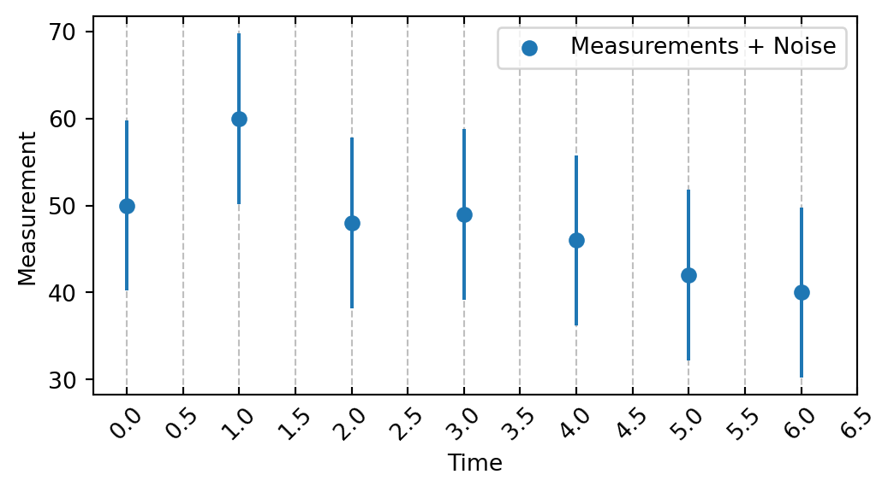
If we were to use the same heuristics illustrated before, a jump of ~10 units between Time 0, Time 1 and Time 2 would be compatible with the observed measurements and their associated error bounds.
Depending on the nature of the phenomena under investigation this might or might not be plausible. In order to verify this we need to “blend” the measurements provided by our noisy sensor with a model of the dynamics controlling our phenomena. Let’s start with a very naive model.
fig, ax = time_series_plots(
measurements=measurements,
expected_noise=5
)
ax.plot(
np.arange(len(measurements)),
[50] * len(measurements),
linestyle=":",
color="k",
label="Constant Dynamics"
)
ax.legend()
plt.show()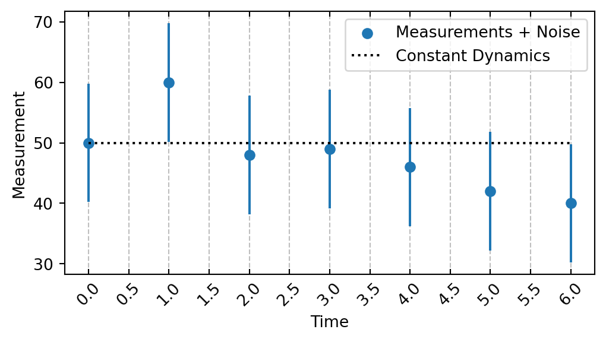
In this case we assume that the state underlying our phenomena stays constant over time, hence producing virtually no variations in the observed measurements.
We can already see how this, despite its simplicity, is already informing us that, under the assumptions of our model, the measurement at Time 1 is likely to be driven by noise.
Heads Up
It is important to remember that the word noise doesn’t necessary indicate the presence of an error. It rather represents variations that are not consistent with our model or that cannot be explained by the information we have at hand.
That said, we can also clearly see how the assumptions of a constant dynamics model do not get along well with the available measurements, which seems to be characterized by a downward trend. So maybe let’s try to draw the gradient line connecting the first to the last measurement
def slope_model(beta, alpha, time):
"""Generate predictions according to a
simple linear model.
Args:
- beta(float): intercept value.
- alpha(float): slope value.
- time(np.array): time points.
Returns:
- predictions (np.array): predictions generated by
the model.
"""
return beta + alpha * time
negative_slope_model = slope_model(
beta=50,
alpha=-1.7,
time=np.arange(len(measurements))
)
fig, ax = time_series_plots(
measurements=measurements,
expected_noise=5
)
ax.plot(
np.arange(len(measurements)),
negative_slope_model,
linestyle=":",
color="k",
label="Negative Slope Dynamics"
)
ax.legend()
plt.show()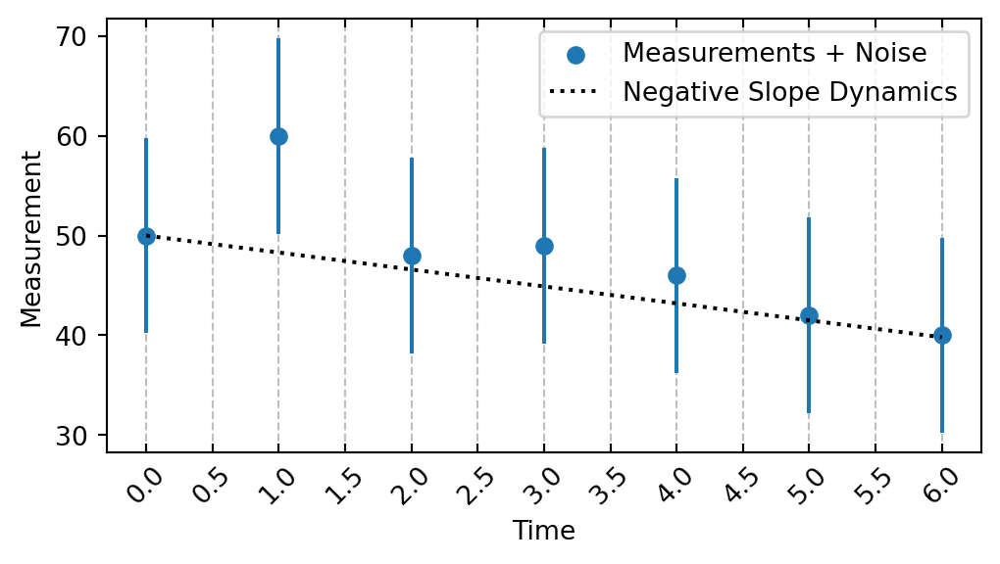
Although far from being perfect, this new model appears to provide a much better fit to our measurements. It is compatible with most of them or at least lies within the acceptable region defined by their error bounds. On top of that, having a model allows us to perform predictions about future measurements that we can then confront with actual observed values.
However, we can see that the predictions from our negative slope model are not incompatible with the measurement provided at Time 1, what should we do in this case then? Should we simply disregard it? At the end of the day the model is just an artificial device plucked out of thin air (well, not exactly as it should be informed by our knowledge of the dynamics at play) while the measurement is the manifestation of real events. If we can exclude a completely faulty record, it still holds some information that we can use for improving our estimate.
If both measurements and model’s predictions are identical one of the two becomes redundant. However, as soon as we observe discrepancies between them we know that there is information that can be gained. So what should we trust in this situation, the predictions or the measurements?
Take Home Message
No source of information must be ignored, a better estimate can be achieved by blending model predictions and measurements. Two measurements are better than one.
So how should this blending happen? A reasonable strategy would be to weight more the source of information that we believe to be more reliable. Let’s look at how we can formalize this in python code. From here on we will occasionally rely on JAX for making our code more efficient (we won’t spend time describing what JAX is, we recommend checking out the documentation page).
from jax import jit
from jax.lax import scan
import jax.numpy as jnp
from jax import random
@jit
def custom_gain_model(measurements, starting_estimate, gain_rate, scale_factor, gain_update_frequency):
"""Create a custom gain model. It will iteratively estimate
the state underlying the observed measurements. The function will be JIT compiled for increasing execution time.
Args:
- measurements (np.array): observed measurements
- starting_estimate (float): the starting point
for the estimate.
- gain_rate (float): the time dependent increase in estimate, it correspond to the slope of the slope_model.
- gain_update_frequency (float): time steps required for having a full update
of the gain.
- scale_factor (float): scale applied to weight the measurements.
Returns:
- estimated_states(np.array): estimated states underlying the measurements.
"""
@jit
def step(carry, measurement):
"""Step function for computing the estimate, this will be iterated
over all the measurements. The arguments required for estimating the
state will be provided by the carry.
"""
previous_estimate, gain_update_frequency, gain_rate, scale_factor = carry
prediction = previous_estimate + gain_rate * gain_update_frequency
new_estimate = prediction + scale_factor * (measurement - prediction)
new_carry = (new_estimate, gain_update_frequency, gain_rate, scale_factor)
output = jnp.array([new_estimate, prediction])
return new_carry, output
_, output = scan(
step,
(starting_estimate, gain_update_frequency, gain_rate, scale_factor),
measurements
)
estimated_states = output[:, 0]
predictions = output[:, 1]
return estimated_states, predictions
measurements = 50 + np.arange(10) * -1.7
measurements += random.normal(
key=random.PRNGKey(666),
shape=(len(measurements),)
) * 5
estimated_states, predictions = custom_gain_model(
measurements=measurements,
gain_update_frequency=1.,
starting_estimate=50.,
gain_rate=-1.7,
scale_factor=.3
)
estimated_states = np.array(estimated_states)
predictions = np.array(predictions)In this case we used as gain rate the slope of our previous slope_model and expressed a belief that the predictions of our model are to be trusted more than the measurements. Precisely that the discrepancy between prediction and measurement should contribute only by 30% to the overall estimate.
fig, ax = time_series_plots(
measurements=measurements,
expected_noise=5
)
ax.plot(
np.arange(len(measurements)),
estimated_states,
linestyle="--",
color="r",
label="Estimated States"
)
ax.plot(
np.arange(len(measurements)),
predictions,
linestyle=":",
color="r",
marker="*",
label="Predictions"
)
ax.legend()
plt.show()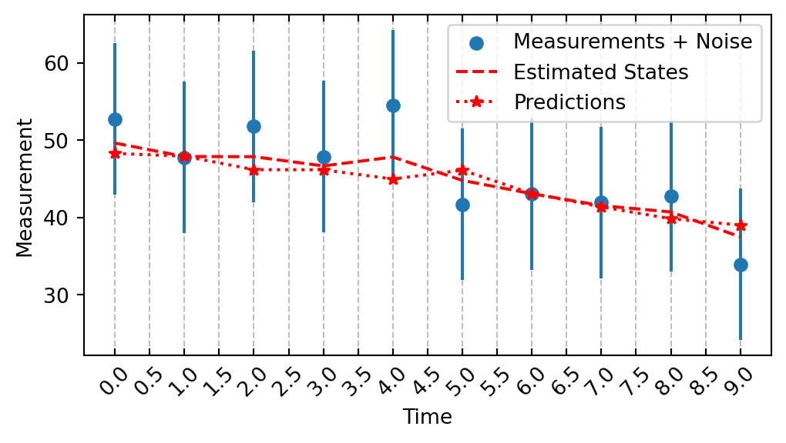
By varying our belief, expressed through the gain_rate we can obtain estimates that are more or less influenced by either the dynamics’ model or by the measurements.
import matplotlib
color_mapper = matplotlib.cm.get_cmap('Dark2')
fig, ax = time_series_plots(
measurements=measurements,
expected_noise=5
)
for index, scale_factor in enumerate([.4, .6, .8,]):
estimated_states, predictions = custom_gain_model(
measurements=measurements,
starting_estimate=52.,
gain_rate=-1.7,
gain_update_frequency=1.,
scale_factor=scale_factor
)
estimated_states = np.array(estimated_states)
ax.plot(
np.arange(len(measurements)),
estimated_states,
c=color_mapper(index),
linestyle="--",
label=f"Scale Factor {scale_factor}"
)
ax.plot(
np.arange(len(measurements)),
predictions,
c=color_mapper(index),
linestyle=":",
marker="*",
label=f"Predictions {scale_factor}"
)
ax.legend(loc='center left', bbox_to_anchor=(1, 0.5))
plt.show()/var/folders/5w/nz0br6dn399_04hd3q55ljth0000gq/T/ipykernel_39848/1561832762.py:3: MatplotlibDeprecationWarning: The get_cmap function was deprecated in Matplotlib 3.7 and will be removed two minor releases later. Use ``matplotlib.colormaps[name]`` or ``matplotlib.colormaps.get_cmap(obj)`` instead.
color_mapper = matplotlib.cm.get_cmap('Dark2')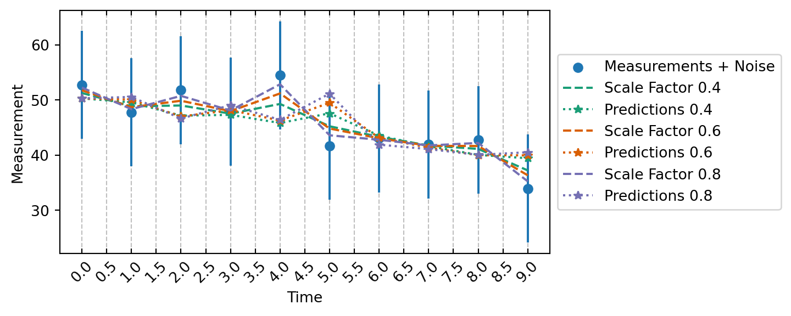
here we used as gain_rate a fixed value of -1.7 as it was the slope of the linear model we used for simulating our measurements. However, having a fixed gain rate is quite an inflexible strategy which becomes particular ineffective when the rate of change varies dynamically. To circumvent this issue, we can let the gain_rate parameter varies based on how far are the predictions of our model dynamic from the observed measurement.
@jit
def adaptive_gain_model(measurements, starting_estimate, starting_gain, gain_factor, gain_update_frequency, scale_factor):
"""Create an adaptive gain model. It will iteratively estimate
the state underlying the observed measurements and compute the gain adaptively based on the mismatch between prediction and measurement.
The function will be JIT compiled for increasing execution time.
Args:
- measurements (np.array): observed measurements
- starting_estimate (float): the starting point
for the estimate.
- starting_gain (float): the starting point
for the gain.
- gain_factor (float): factor used for adaptively update the gain.
- gain_update_frequency (float): time steps required for having a full update
of the gain.
- scale_factor (float): scale applied to weight the measurements.
Returns:
- estimated_states(np.array): estimated states underlying the measurements.
"""
@jit
def step(carry, measurement):
"""Step function for computing the estimate, this will be iterated
over all the measurements. The arguments required for estimating the
state will be provided by the carry.
"""
(
previous_estimate,
previous_gain,
gain_update_frequency,
gain_factor,
scale_factor
) = carry
prediction = previous_estimate + previous_gain * gain_update_frequency
residual = measurement - prediction
new_estimate = prediction + scale_factor * (residual)
new_gain = previous_gain + gain_factor * (residual / gain_update_frequency)
new_carry = (
new_estimate,
new_gain,
gain_update_frequency,
gain_factor,
scale_factor
)
output = jnp.array([new_gain, new_estimate, prediction])
return new_carry, output
_, output = scan(
step,
(starting_estimate, starting_gain, gain_update_frequency, gain_factor, scale_factor),
measurements
)
gains = output[:, 0]
estimated_states = output[:, 1]
predictions = output[:, 2]
return gains, estimated_states, predictions
gains, estimated_states, predictions = adaptive_gain_model(
measurements=measurements,
gain_update_frequency=1.,
starting_estimate=50.,
starting_gain=-1.7,
scale_factor=.6,
gain_factor=.1
)
gains = np.array(gains)
estimated_states = np.array(estimated_states)
predictions = np.array(predictions)In this new version of custom_gain_model we let the gain (which can grossly be compared with the slope of our original slope_model) be a fraction (controlled by gain_factor) of the residuals derived from predictions and observed measurements. As before this new_gain parameter controls how much belief we put in either the model or the observed measurements but instead of setting its value statically we let it adapt based on the performance of the model so that if our initial guess results to be inadequate at a certain point in time (e.g. due to abrupt changes in the state dynamics) the model can correct itself.
from matplotlib.gridspec import GridSpec
fig = plt.figure(figsize=(8, 5))
spec = GridSpec(2, 2, figure=fig)
ax_state = fig.add_subplot(spec[0, :])
ax_predictions = fig.add_subplot(spec[1, 0])
ax_gains = fig.add_subplot(spec[1, 1])
for ax in [ax_state, ax_predictions]:
ax = time_series_plots(
measurements=measurements,
expected_noise=5,
current_ax=ax
)
ax_state.plot(
np.arange(len(measurements)),
estimated_states,
linestyle="--",
color="r",
label="Estimated States"
)
ax_state.legend()
ax_predictions.plot(
np.arange(len(measurements)),
predictions,
linestyle="--",
color="r",
label="Predictions"
)
ax_predictions.legend()
ax_gains.plot(
np.arange(len(measurements)),
gains,
linestyle="--",
color="r",
label="Gains"
)
ax_gains.legend()
plt.tight_layout()
plt.show()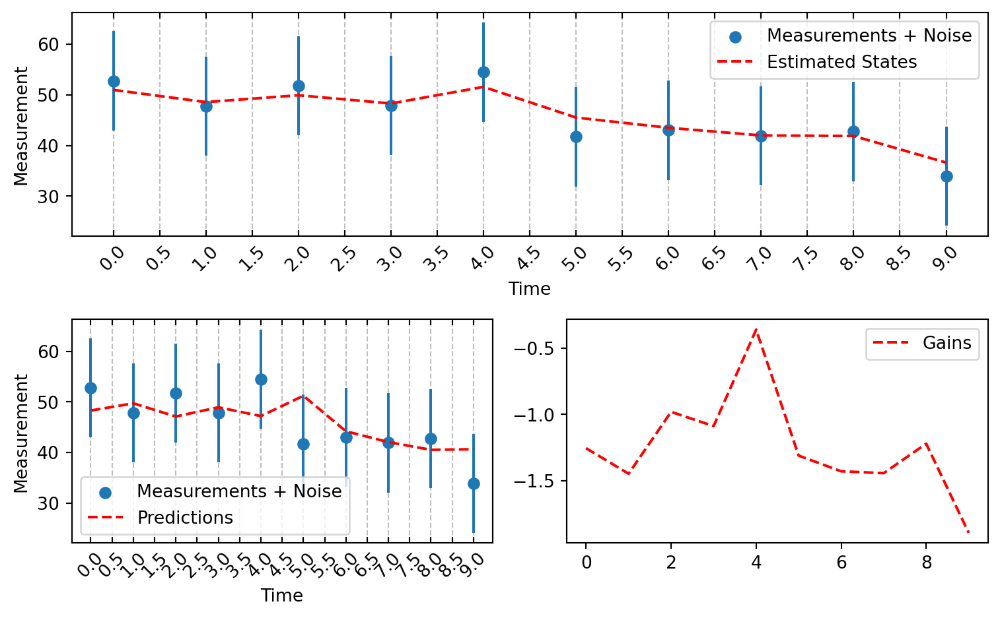
The adaptive_gain_model is basically equivalent to the g-h filter we introduced at the beginning of this post. The g and h are the scaling factors that we introduced in our function, namely the scale_factor (weighting the contribution of the the observed measurements) and the gain_factor (scaling the change in state estimate over time).
Take Home Message
The key points underlying the algorithm summarize what we highlighted until here
What is the target of our estimation efforts is what is called the system. We can think of it as the data generating process, for example given a time series of GDP for a nation the system might be the economy of that nation. The state is the current configuration of the system at a given point in time, for example the estimated GDP for the year 2008, it is usually hidden to us. The measurements are quantitative description of the state of the system, they are often noisy so they might not coincide with the state, we can think of them as observable manifestations of the state.
Take Home Message
As in eny estimation problem, the aim of a filtering algorithm is to form estimates of the hidden state of the system given some observable information.
In order to generate our estimate we need to alternate between a prediction step and an update step.
In the prediction step we use a process model (in our case was the slope_model) for mathematically describing how the system evolves, this model is used for propagating the state of the system into the future. The model has an intrinsic amount of unknown process error that might be caused by imperfect measurements or inadequate process model (we must remember that all models are wrong!).
Take Home Message
A filtering algorithm is as good as the mathematical model used for expressing our beliefs about the system dynamics.
In the update step we update the propagated state with the information derived from the measurement.
We can have a better understanding of the various steps by looking at a graphical representation of the algorithm
flowchart LR predict(((Predict Step))) update(((Update Step))) estimate((State Estimate\nt1)) prediction((State Prediction\nt1)) init((Initialisation\nt0)) measurement((Measurement\nt1)) init --> predict; predict ----> prediction; prediction ----> update; measurement --> update; update ----> estimate; estimate --> predict
We will now re-write the adaptive_gain_model into the gh_filter by making the steps outlined in the diagram above a little bit more explicit
@jit
def gh_filter(measurements, starting_state, starting_gain, gain_factor, gain_update_frequency, state_factor):
"""Create the gh filter model. It will iteratively estimate
the state underlying the observed measurements and compute the gain adaptively based on the mismatch between prediction and measurement.
The function will be JIT compiled for increasing execution time.
Args:
- measurements (np.array): observed measurements
- starting_estimate (float): the starting point
for the estimate.
- starting_gain (float): the starting point
for the gain.
- gain_factor (float): factor used for adaptively update the gain.
- gain_update_frequency (float): time steps required for having a full update
of the gain.
- state_factor (float): scale applied to weight the measurements.
Returns:
- estimated_states(np.array): estimated states underlying the measurements.
"""
@jit
def predict(state_estimate, gain, gain_update_frequency):
"""Perform the predict step of the algorithm. Gain will not really be
predicted.
"""
state_predicted = state_estimate + gain * gain_update_frequency
gain_predicted = gain
return state_predicted, gain_predicted
def update(state_predicted, gain_predicted, state_factor, gain_factor, gain_update_frequency, residual):
"""Perform the update step of the algorithm.
"""
state_updated = state_predicted + state_factor * (residual)
gain_updated = gain_predicted + gain_factor * (residual / gain_update_frequency)
return state_updated, gain_updated
@jit
def step(carry, measurement):
"""Step function for computing the estimate, this will be iterated
over all the measurements. The arguments required for estimating the
state will be provided by the carry.
"""
(
previous_state,
previous_gain,
gain_update_frequency,
gain_factor,
state_factor
) = carry
state_predicted, gain_predicted = predict(
state_estimate=previous_state,
gain=previous_gain,
gain_update_frequency=gain_update_frequency
)
residual = measurement - state_predicted
state_updated, gain_updated = update(
state_predicted=state_predicted,
gain_predicted=gain_predicted,
state_factor=state_factor,
gain_factor=gain_factor,
gain_update_frequency=gain_update_frequency,
residual=residual
)
new_carry = (
state_updated,
gain_updated,
gain_update_frequency,
gain_factor,
state_factor
)
output = jnp.array([state_updated, state_predicted, gain_updated])
return new_carry, output
_, output = scan(
step,
(
starting_state,
starting_gain,
gain_update_frequency,
gain_factor,
state_factor
),
measurements
)
states_estimated = output[:, 0]
states_predicted = output[:, 1]
gains_estimated = output[:, 2]
return gains_estimated, states_estimated, states_predictedas we can the the algorithm is exactly the same, we just made each step be represented by an appropriate closure (this is needed for making JAX happy). So how do we pick and optimal value of state_factor and gain_factor? Well this is problem dependent but it can be informed by the effect that these two parameters have on the estimate
state_factor (g): as this parameter gets larger we will tend to more closely follow (i.e. we will weight more) the measurement. A value too high will lead us to over-fit to the noise while a value too low will force us to ignore important information about changes in the system dynamics.
gain_factor (h): as this parameter gets larger we will tend to react more quickly to sudden changes in the dynamics underlying our measurements. A value too high might cause to over-react producing spurious high-frequency spikes in the estimate while a value too low might cause the signal to adapt very slowly to sudden changes in the measurements (i.e., the estimate will take a long time to correct itself).
Let’s try to get a visual intuition of the effect of varying state_factor and gain_factor in different situations.
def plot_estimated_states(measurements, measurement_noise, estimated_states_dict, ax):
color_mapper = matplotlib.cm.get_cmap('Dark2')
ax = time_series_plots(
measurements=measurements,
expected_noise=measurement_noise,
dense_grid=False,
current_ax=ax,
scatter_kwargs={
"alpha": 0.2,
"s": 2
},
error_kwargs={
"alpha": 0.2
},
)
for index, (model_name, estimated_states) in enumerate(estimated_states_dict.items()):
ax.plot(
np.arange(len(measurements)),
estimated_states,
c=color_mapper(index),
linestyle="--",
label=f"Estimated States {model_name}",
)
ax.legend()
return ax
def run_example(measurements, gain_factors, state_factors, measurement_noise=5):
estimated_states_dict = {}
for (gain_factor, state_factor) in list(product(gain_factors, state_factors)):
gains, estimated_states, predictions = gh_filter(
measurements=measurements,
starting_state=5.,
starting_gain=1.,
gain_factor=gain_factor,
state_factor=state_factor,
gain_update_frequency=1
)
estimated_states_dict[f"g: {state_factor} h: {gain_factor}"] = estimated_states
fig, ax = plt.subplots(1, 1, figsize=(8, 4))
ax = plot_estimated_states(
measurements=measurements,
measurement_noise=measurement_noise,
estimated_states_dict=estimated_states_dict,
ax=ax
)
return fig, axmeasurements = (0 + jnp.arange(100) * 1.3) + random.normal(shape=(100,), key=random.PRNGKey(666)) * 5.
measurements = jnp.clip(measurements, None, 100)
fig, ax = run_example(
measurements=measurements,
gain_factors=[.3, .6],
state_factors=[.3, .6]
)/var/folders/5w/nz0br6dn399_04hd3q55ljth0000gq/T/ipykernel_39848/3276693041.py:2: MatplotlibDeprecationWarning: The get_cmap function was deprecated in Matplotlib 3.7 and will be removed two minor releases later. Use ``matplotlib.colormaps[name]`` or ``matplotlib.colormaps.get_cmap(obj)`` instead.
color_mapper = matplotlib.cm.get_cmap('Dark2')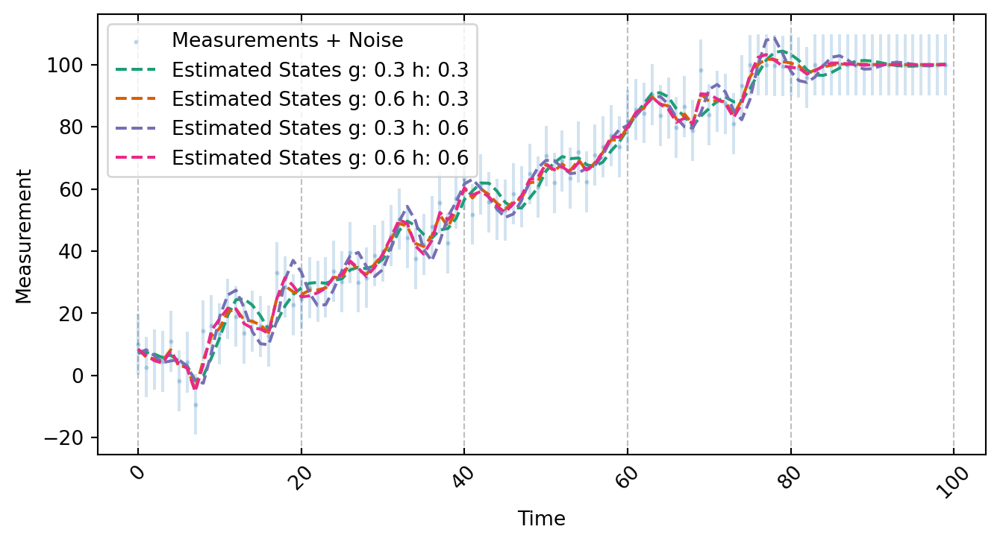
measurements = (0 + jnp.arange(50) * 1.03) + random.normal(shape=(50,), key=random.PRNGKey(666)) * 5.
measurements = jnp.hstack(
(
measurements,
jnp.repeat(measurements[-1] * 3, 25) + random.normal(shape=(25,), key=random.PRNGKey(666)) * 5.
)
)
measurements = jnp.hstack(
(
measurements,
jnp.repeat(measurements[-1] / 3.5, 25) + random.normal(shape=(25,), key=random.PRNGKey(666)) * 5.
)
)
fig, ax = run_example(
measurements=measurements,
gain_factors=[.3, .6],
state_factors=[.3, .6]
)/var/folders/5w/nz0br6dn399_04hd3q55ljth0000gq/T/ipykernel_39848/3276693041.py:2: MatplotlibDeprecationWarning: The get_cmap function was deprecated in Matplotlib 3.7 and will be removed two minor releases later. Use ``matplotlib.colormaps[name]`` or ``matplotlib.colormaps.get_cmap(obj)`` instead.
color_mapper = matplotlib.cm.get_cmap('Dark2')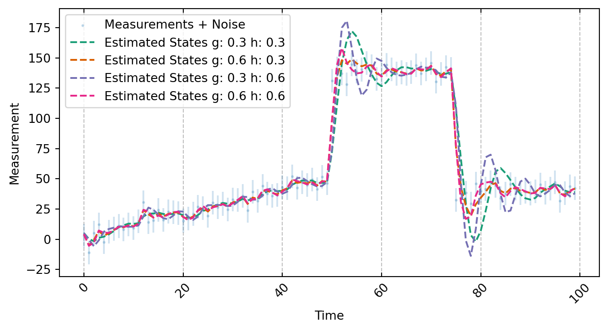
time = jnp.arange(5)
measurements = 0 + (time * 1.03) + (jnp.power(time, 2) * 6) + random.normal(shape=(5,), key=random.PRNGKey(666)) * 5.
fig, ax = run_example(
measurements=measurements,
gain_factors=[.3, .6],
state_factors=[.3, .6]
)/var/folders/5w/nz0br6dn399_04hd3q55ljth0000gq/T/ipykernel_39848/3276693041.py:2: MatplotlibDeprecationWarning: The get_cmap function was deprecated in Matplotlib 3.7 and will be removed two minor releases later. Use ``matplotlib.colormaps[name]`` or ``matplotlib.colormaps.get_cmap(obj)`` instead.
color_mapper = matplotlib.cm.get_cmap('Dark2')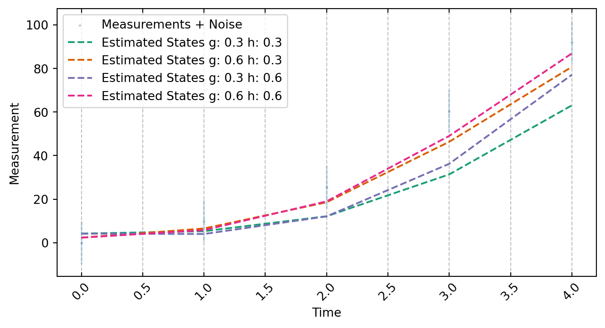
measurements = (0 + jnp.arange(100) * 1.3) + random.normal(shape=(100,), key=random.PRNGKey(666)) * 50.
fig, ax = run_example(
measurements=measurements,
gain_factors=[.3, .6],
state_factors=[.3, .6],
measurement_noise=50
)/var/folders/5w/nz0br6dn399_04hd3q55ljth0000gq/T/ipykernel_39848/3276693041.py:2: MatplotlibDeprecationWarning: The get_cmap function was deprecated in Matplotlib 3.7 and will be removed two minor releases later. Use ``matplotlib.colormaps[name]`` or ``matplotlib.colormaps.get_cmap(obj)`` instead.
color_mapper = matplotlib.cm.get_cmap('Dark2')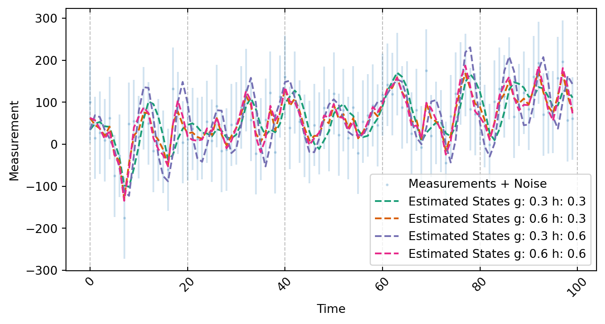